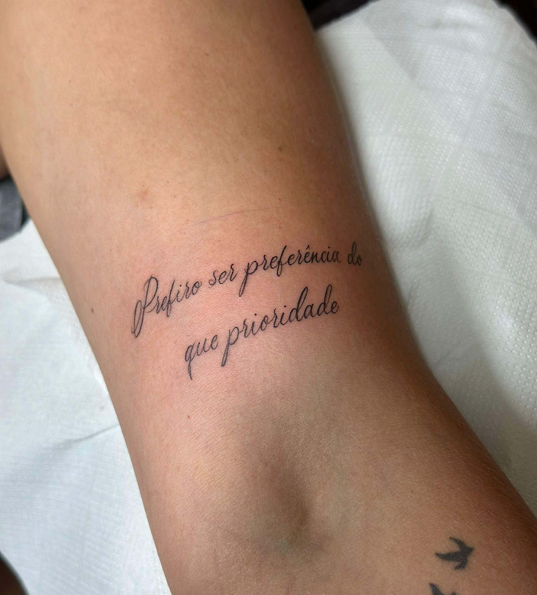
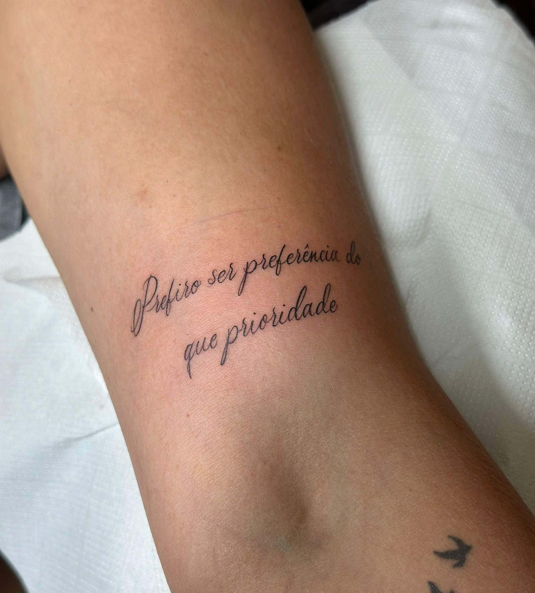

Nascido em 1997 em Viana do Castelo. Cresci rodeado por referências criativas — com parte da família ligada às artes — e desde cedo desenvolvi um fascínio pela tatuagem, mesmo sendo algo pouco aceite no meio familiar.
Após concluir os estudos e não me identificar com nenhuma outra profissão, apostei na única área que realmente me despertava paixão: a tatuagem. Iniciei com um curso de formação base e, entre pausas e recomeços, foi em 2021, durante a pandemia, que decidi dedicar-me a tempo inteiro à área.
Comecei por me especializar em Custom Lettering, ganhando precisão de linha, e mais tarde evoluí para o Realismo Black & Grey, com foco em retratos — um estilo que exige não só técnica como sensibilidade, algo que procuro transmitir em cada peça. O trabalho mais comercial teve o seu papel no meu crescimento técnico, principalmente em linhas e sombreados, mas sempre mantive a prioridade na intenção por trás de cada tatuagem.
Hoje trabalho num estúdio privado, apenas por marcação, onde cada sessão é pensada para oferecer uma experiência personalizada e com foco total no cliente. Evito projetos genéricos e acredito que a verdadeira exclusividade está no cuidado com que cada trabalho é feito.
Além das tatuagens, desenvolvi também o projeto de Lettering oficial do videoclipe "Tu Não Deixes", do artista Tuka 258.


 



Instagram: @ink.stuart
FadeIn. Barbearia e Ink Stuart Tattoo
Viana do Castelo, Portugal
Atendimento por marcação
Abrir no Google Maps